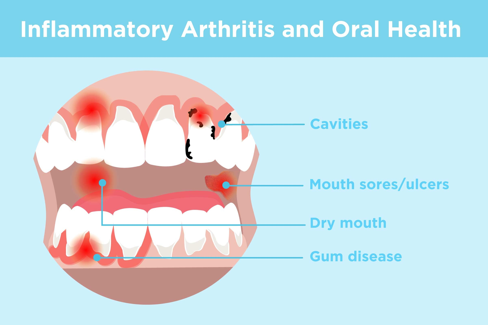

Gum problems

SYMPTOMS OF GINGIVITIS AND PERIODONTITIS
- gums that are red, tender, or swollen
-
gums that bleed when you brush or floss your teeth
-
gums that have pulled away from the teeth
-
loose teeth
-
a change in how your teeth fit together when you bite (malocclusion)
-
pus between teeth and gums
-
pain when chewing
-
sensitive teeth
-
partial dentures that no longer fit
-
foul-smelling breath that doesn’t go away after you brush your teeth
-
CAUSES:
- Plaque is a thin film of bacteria. It constantly forms on the surface of your teeth. As plaque advances, it hardens and becomes tartar. You can develop an infection when plaque extends below the gum line.
-
Left unchecked, gingivitis can cause the gums to separate from the teeth. This can cause injury to the soft tissue and bone supporting the teeth. The tooth may become loose and unstable.
HOME REMEDIES
- deep cleaning your teeth
-
antibiotic medications
-
surgery